dbinom(2, size = 5, prob = 0.3)3 Variables aleatorias
Neste laboratorio imos explorar de forma práctica as ideas fundamentais vistas no tema de variables aleatorias. Estudaremos como representar e visualizar con R as distribucións máis importantes. Veremos como simular con R datos destas distribucións e analizaremos as mostras obtidas mediante representacións gráficas e comparacións coas distribucións teóricas. Tamén verificaremos o TCL de forma experimental.
3.1 Distribucións en R
R dispón de catro funcións básicas para traballar con distribucións de probabilidade. Cada unha destas funcións fórmase cun prefixo, que indica a acción que realiza a función, e un sufixo, que indica o modelo de distribución co que se está a traballar.
| Prefixo en R | Descrición |
|---|---|
d |
función de masa (distribucións discretas) ou función de densidade (distribucións continuas) |
p |
probabilidade acumulada ou función de distribución |
q |
cuantís da distribución |
r |
xeración de números aleatorios da distribución |
A continuación amósanse algúns dos sufixos que se empregan en R para modelos de variables aleatorias discretas:
| Distribución | Sufixo en R |
|---|---|
| Binomial | binom |
| Xeométrica | geom |
| Poisson | pois |
| Binomial negativa | nbinom |
| Hiperxeométrica | hyper |
Na seguinte táboa figuran os sufixos que se empregan en R para os principais modelos de variables aleatorias continuas.
| Distribución | Sufixo en R |
|---|---|
| Uniforme continua | unif |
| Normal | norm |
| Exponencial | exp |
| Gamma | gamma |
| Beta | beta |
Por exemplo, a función rbinom() utilízase para xerar números aleatorios dunha variable binomial, mentres que a función dpois() serve para calcular a función de masa dunha variable de Poisson e a función dnorm() para avaliar a función de densidade dunha variable normal. Estas funcións son moi útiles para comprender mellor como se comportan as variables aleatorias, xa que permiten visualizar as súas funcións de masa ou densidade, estudar a súa función de distribución e analizar o seu comportamento mediante a xeración de datos simulados.
3.2 Principais modelos de variables aleatorias discretas
3.2.1 Distribucións de Bernoulli e Binomial
Unha variable aleatoria binomial \(X\) conta o número de éxitos en \(n\) experimentos de Bernoulli independentes con probabilidade de éxito en cada intento \(p\). Lembra que unha variable de Bernoulli só toma dous valores: 1 (éxito) e 0 (fracaso) e a distribución caracterízase pola probabilidade de éxito \(p\).
Se \(X\sim \textnormal{Binom}(n,p)\), entón:
\[
P(X = x) = \binom{n}{x} p^x (1 - p)^{n - x},\quad x = 0,1,\ldots,n.
\] Podemos calcular a función de masa dunha binomial en R coa función dbinom(). Por exemplo, se \(X\sim \textnormal{Binom}(n=5,p=0.3)\) e queremos calcular \(P(X=2)\), escribimos:
Representamos a continuación a función de masa dunha variable \(X\sim \textnormal{Binom}(5,0.3)\).
n <- 5 # Número de intentos
p <- 0.3 # Probabilidade de éxito de cada intento
x <- 0:n # Valores que toma a variable
px <- dbinom(x, n, p) # Función de masa dunha Binom(n,p) avaliada en x
plot(x, px, type = "h", xlab = "x", ylab = "P(X=x)") # Representación da función de masa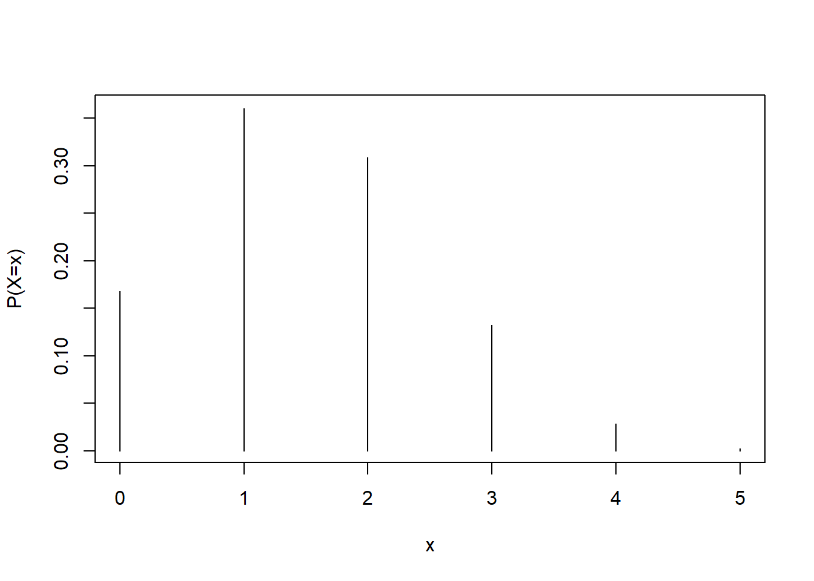
Lembra que a función de distribución \(F(x)\) dunha variable aleatoria \(X\) vén dada por \[F(x)=P(X\leq x).\] A función de distribución \(F(x)\) describe a probabilidade de obter un valor igual ou inferior a \(x\). Se queremos avaliar a función de distribución dunha variable binomial en R utilizaremos a función pbinom(). Por exemplo, sexa \(X\thicksim \textnormal{Bin}(5,0.3)\). Para calcular \(F(2)=P(X\leq 2)\), escribimos:
pbinom(2, size = 5, prob = 0.3)Observa que é equivalente a
sum(dbinom(0:2, size = 5, prob = 0.3))A función cuantil é a inversa da función de distribución. Representa o primeiro valor da variable que alcanza a probabilidade pedida. A función para calcular os cuantís dunha binomial en R é qbinom(). Por exemplo, a mediana de \(X\sim\textnormal{Binom}(5,0.3)\) é:
qbinom(0.5, size = 5, prob = 0.3)Os cuartís de \(X\thicksim\textnormal{Binom}(5, 0.3)\), calcúlanse como:
qbinom(c(0.25, 0.5, 0.75), size = 5, prob = 0.3)A función para xerar en R números aleatorios dunha binomial é rbinom(). O primeiro argumento da función é o número de elementos que se van xerar. Por exemplo, se queremos xerar un único número dunha variable \(X\sim\textnormal{Binom}(5,0.3)\) escribimos:
rbinom(1, size = 5, prob = 0.3)3.2.2 Distribucións xeométrica e binomial negativa
Consideramos agora o experimento que consiste en repetir un experimento de Bernoulli ata obter o primeiro éxito, e definimos a variable aleatoria \(X\) como o número de fracasos antes de obter o primeiro éxito. Así definida, \(X\) segue unha distribución xeométrica de parámetro \(p\), sendo \(p\) probabilidade de éxito en cada intento. En R, dgeom() calcula a función de masa, pgeom() a función de distribución, qgeom() os cuantís, e rgeom() xera valores aleatorios dunha distribución xeométrica.
Por exemplo, supoñamos que estamos xogando ao parchís e necesitamos sacar un cinco para poder saír da casa. Lanzamos repetidamente un dado. Cal é a probabilidade de obter exactamente 10 resultados distintos de cinco antes de conseguir o noso primeiro cinco? Observa que se consideramos a variable aleatoria \(X\)= número de resultados distintos de 5 antes do primeiro cinco, entón \(X\sim \textnormal{Xe}(p=1/6)\). Queremos calcular \(P(X=10)\), é dicir:
dgeom(10, prob = 1 / 6)Sexa agora \(X\) a variable aleatoria que representa o número de fracasos antes de acadar o \(k\)-ésimo éxito. Así definida, \(X\) segue unha distribución binomial negativa e denótase como \(X\sim\textnormal{BN}(k, p)\) (a distribución xeométrica é un caso particular con \(k=1\)). En R, dnbinom() calcula a función de masa, pnbinom() a función de distribución, qnbinom() os cuantís, e rnbinom() xera valores aleatorios dunha distribución binomial negativa.
Por exemplo, supoñamos que no experimento que consiste en repetir o lanzamento dun dado, queremos calcular a probabilidade de obter exactamente 10 resultados distintos de cinco antes de conseguir o noso terceiro cinco. Observa que se consideramos a variable aleatoria \(X\)= número de resultados distintos de 5 antes do terceiro cinco, entón \(X\sim \textnormal{BN}(k=3, p=1/6)\). Queremos calcular \(P(X=10)\), é dicir:
dnbinom(10, size = 3, prob = 1 / 6)3.2.3 Distribución de Poisson
Un proceso de Poisson xeneraliza en certa medida o proceso de Bernoulli. Consiste en observar o número de veces que se presenta un suceso (número de éxitos) nun determinado intervalo (xeralmente de tempo). Nestes procesos supónse que hai estabilidade, no sentido de que o número medio de sucesos por unidade de tempo (\(\lambda\)) permanece constante. Sexa \(\lambda > 0\) o número medio de sucesos no intervalo e \(X\) o número de éxitos por intervalo. Así definida \(X\) ten distribución de Poisson de parámetro \(\lambda\) e denotamos \(X \sim \text{Pois}(\lambda)\).
En R, dpois() calcula a función de masa, ppois() a función de distribución, qpois() os cuantís, e rpois() xera valores aleatorios dunha distribución de Poisson.
Por exemplo, representamos a continuación a función de masa dunha variable \(X\sim \text{Pois}(\lambda=3)\).
lambda <- 3
x <- 0:15
px <- dpois(x, lambda)
plot(x, px, type = "h", xlab = "x", ylab = "P(X=x)")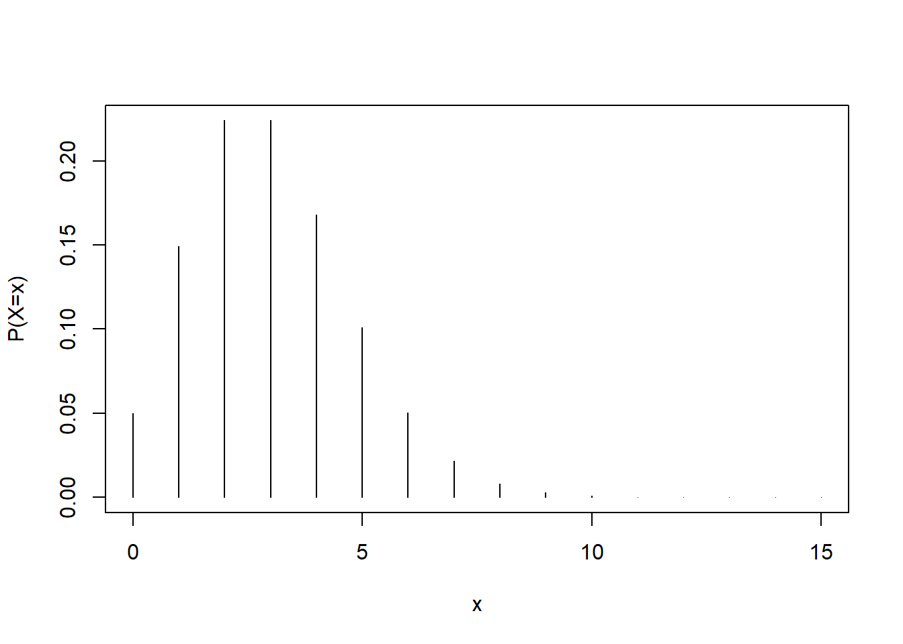
3.2.4 Distribución hiperxeométrica
Consideremos unha poboación finita de \(N\) elementos, dos cales \(k\) pertencen á unha certa clase D e \(N-k\) ao resto. Se agora tomamos unha mostra sen reposición de tamaño \(n\) e estudamos a variable aleatoria \(X\) que representa o número de elementos da clase D na mostra de tamaño \(n\), esta segue unha distribución hiperxeométrica \(X \sim \text{H}(N, n, k)\).
En R, dhyper() calcula a función de masa, phyper() a función de distribución, qhyper() os cuantís, e rhyper() xera valores aleatorios dunha distribución hiperxeométrica. Para especificar a distribución hiperxeométrica coa que queremos traballar, debemos especificar tres argumentos (m, n, k). Temos que ter coidado con estes argumentos, pois non coinciden exactamente cos valores \(N\), \(n\) e \(k\). Así:
| Argumento | Interpretación |
|---|---|
m |
número de elementos da clase D na poboación (\(k\)) |
n |
número de elementos da outra clase (\(N-k\)) |
k |
tamaño da mostra (\(n\)) |
Supoñamos o seguinte exemplo: 15 cidadáns estadounidenses e 20 non cidadáns estadounidenses pasan por unha liña de seguridade nun aeroporto. Selecciónanse aleatoriamente dez persoas para un control adicional. ¿Cal é a probabilidade de que dous ou menos dos pasaxeiros seleccionados sexan cidadáns estadounidenses? Sexa \(X\) o número de cidadáns estadounidenses na mostra de tamaño \(n=10\). Así definida \(X \sim \text{H}(N=35, n=10, k=15)\). Queremos calcular \(P(X\leq 2)\). En R teríamos que executar:
phyper(2, m = 15, n = 20, k = 10)3.3 Principais modelos de variables aleatorias continuas
3.3.1 Distribución uniforme
Unha variable aleatoria \(X\) segue unha distribución uniforme nun intervalo \([a, b]\) se a función de densidade é constante no intervalo, é dicir,
\[ f(x) = \begin{cases} \frac{1}{b - a}, & \text{se } x \in (a,b), \\ 0, & \text{en caso contrario}. \end{cases} \]
En R, dunif() avalía a función de densidade, punif() a función de distribución, qunif() os cuantís, e runif() xera valores aleatorios dunha distribución uniforme continua.
Representamos a función de densidade e a función de distribución dunha variable \(X\sim\textnormal{Unif}([0,1])\).
a <- 0
b <- 1
x <- seq(a - 1, b + 1, length = 1000) # Valores onde avaliar f
fx <- dunif(x, min = a, max = b) # Función de densidade
Fx <- punif(x, min = a, max = b) # Función de distribución
plot(x, fx, xlab = "x", ylab = "f(x)", type = "l", main = "Función de densidade")
plot(x, Fx, xlab = "x", ylab = "F(x)", type = "l", main = "Función de distribución")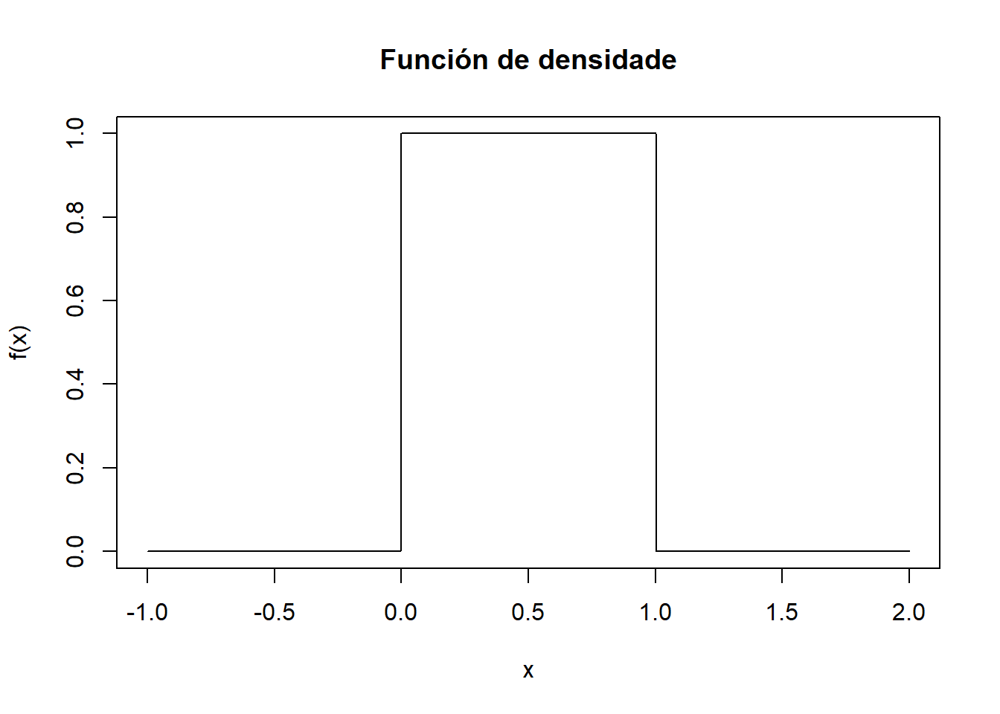
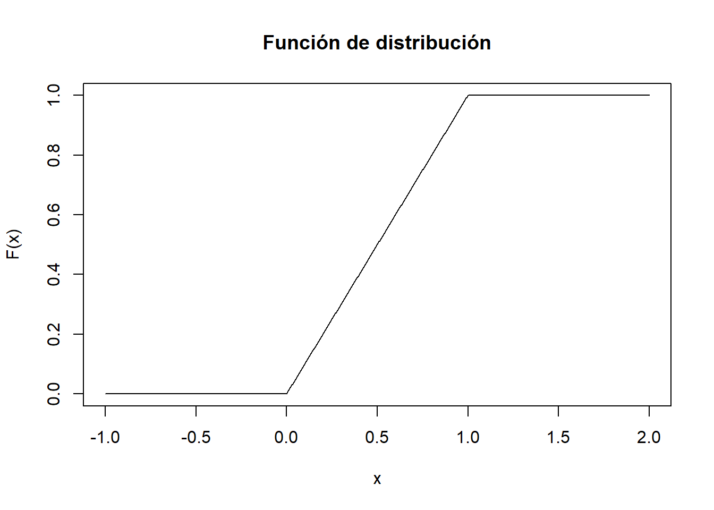
Calculamos como exemplo os cuartís dunha variable \(X\sim\textnormal{Unif}([1,2])\).
qunif(c(0.25, 0.5, 0.75), min = 1, max = 2)A continuación xeramos 1000 números aleatorios seguindo unha distribución uniforme continua no intervalos \([0,1]\) e calculamos a súa media.
xu <- runif(1000, min = 0, max = 1)
mean(xu)3.3.2 Distribución normal
Sexa \(X\) unha variable aleatoria con distribución normal de media \(\mu\) e varianza \(\sigma^{2}\). Denotámola \(X\sim \text{N}(\mu, \sigma)\). Lembramos que a súa función de densidade vén dada por:
\[ f(x) = \frac{1}{\sigma \sqrt{2\pi}} e^{-\frac{(x - \mu)^2}{2\sigma^{2}}}, \quad -\infty < x < \infty. \]
En R, dnorm() avalía a función de densidade, pnorm() a función de distribución, qnorm() os cuantís, e rnorm() xera valores aleatorios dunha distribución normal.
Representamos a función de densidade e a función de distribución dunha variable \(X\sim \text{N}(0,1)\) (normal estándar).
x <- seq(-4, 4, length = 1000) # Valores onde avaliar f
fx <- dnorm(x, mean = 0, sd = 1) # Función de densidade
Fx <- pnorm(x, mean = 0, sd = 1) # Función de distribución
plot(x, fx, xlab = "x", ylab = "f(x)", type = "l", main = "Función de densidade")
plot(x, Fx, xlab = "x", ylab = "F(x)", type = "l", main = "Función de distribución")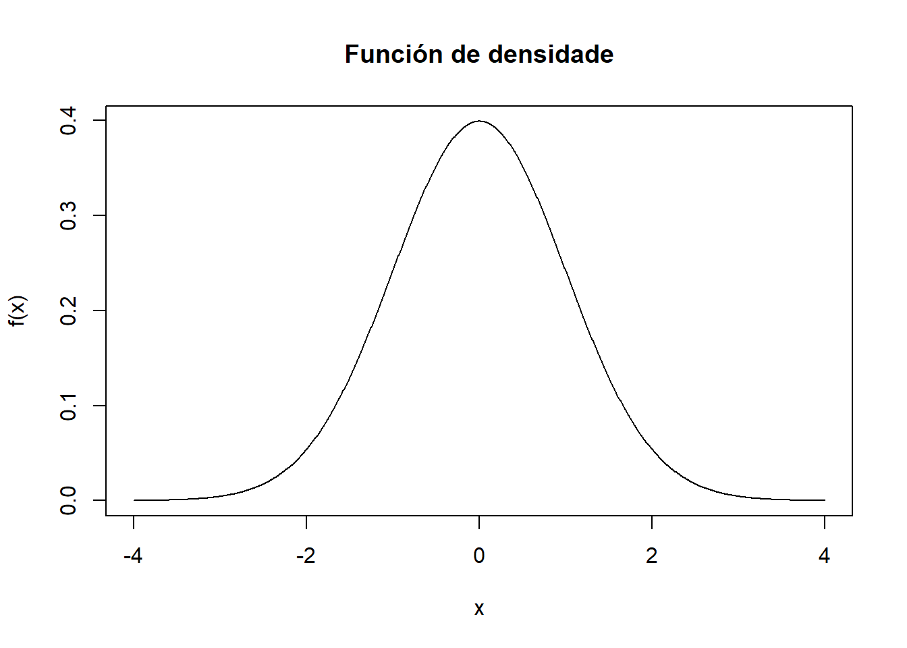
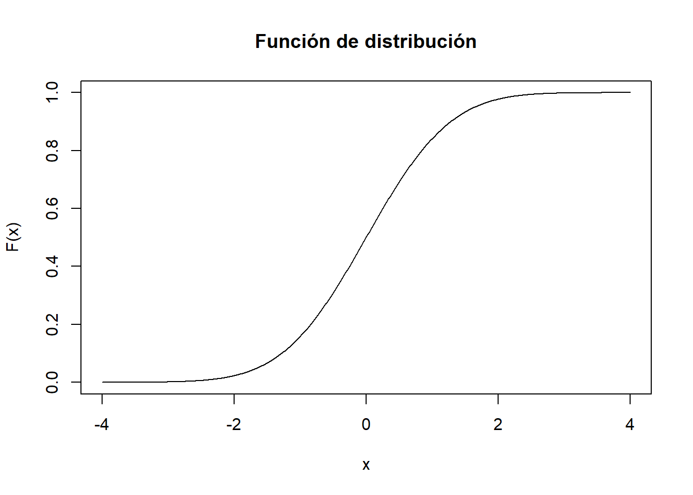
Moitas veces resulta útil transformar unha variable normal \(X\sim \text{N}(\mu, \sigma)\) nunha variable normal estándar (de media 0 e varianza 1). Isto faise mediante a estandarización:
\[Z=\frac{X-\mu}{\sigma}\sim \text{N}(0, 1).\]
Por exemplo, se \(X\sim \text{N}(\mu=4, \sigma=2)\), entón \(P(X\leq 6)=P\left(\frac{X-4}{2}\leq \frac{6-4}{2}\right)=P(Z\leq 1)\). Comprobámolo con R:
pnorm(6, mean = 4, sd = 2) # P(X<6) con X~N(6,2)
pnorm(1) # P(Z<1) con Z~N(0,1)Calculamos a continuación os cuartís dunha variable \(X\sim\textnormal{N}(0,1)\). Observa que non é necesario especificar os argumentos mean = 0 e sd = 1, xa que eses son os seus valores por defecto.
qnorm(c(0.25, 0.5, 0.75))Por último, xeramos 1000 números aleatorios seguindo unha distribución normal estándar. Representamos o histograma destes datos e engadimos a curva da función de densidade correspondente (neste caso o facemos coa función curve(), que permite debuxar unha función matemática sobre un gráfico). Deste xeito, podemos comprobar visualmente que os datos xerados se distribúen segundo o esperado, é dicir, se parecen á distribución normal teórica.
xn <- rnorm(1000, mean = 0, sd = 1)
hist(xn, freq = FALSE, col = "lightblue")
curve(dnorm(x), from = -3, to = 3, add = TRUE, col = "red", lwd = 2)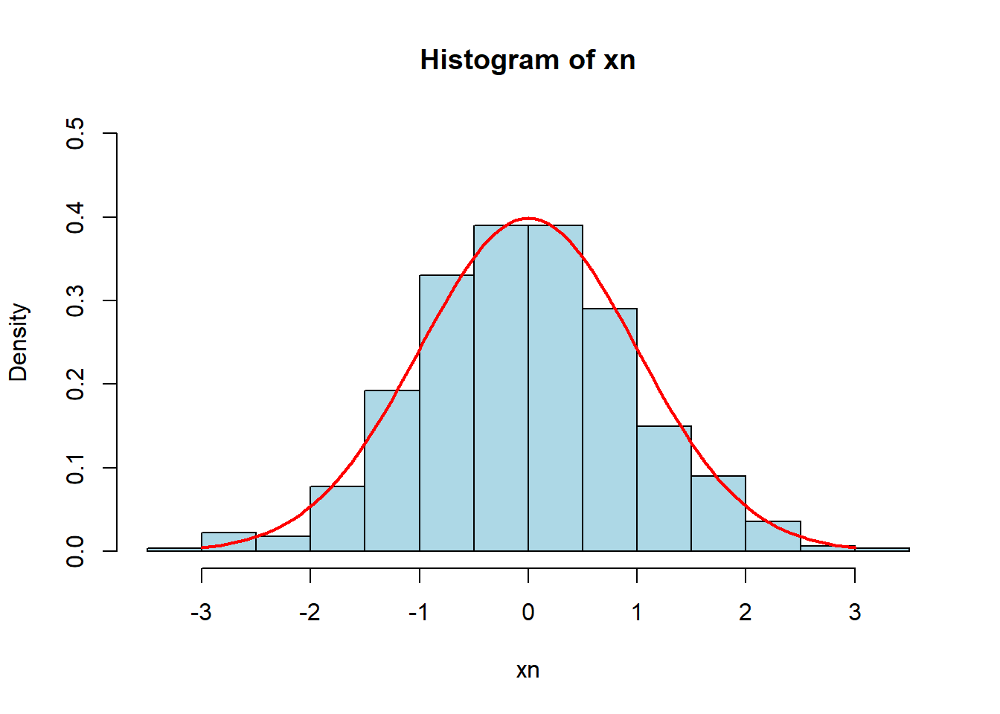
3.3.3 Distribución exponencial
Sexa \(X\) unha variable aleatoria con distribución exponencial de parámetro \(\lambda\). Denotámola \(X\sim\text{Exp}(\lambda)\). Lembramos que a súa función de densidade vén dada por:
\[f(x) = \begin{cases} \lambda e^{-\lambda x} & \text{se } x > 0, \\ 0 & \text{noutro caso}. \end{cases}\]
En R, dexp() avalía a función de densidade, pexp() a función de distribución, qexp() os cuantís, e rexp() xera valores aleatorios dunha distribución exponencial.
Como exemplo, representamos a función de densidade e a función de distribución dunha variable \(X\sim \text{Exp}(\lambda=2)\).
lambda <- 2
x <- seq(0, 5, length = 1000) # Valores onde avaliar f
fx <- dexp(x, rate = lambda) # Función de densidade
Fx <- pexp(x, rate = lambda) # Función de distribución
plot(x, fx, xlab = "x", ylab = "f(x)", type = "l", main = "Función de densidade")
plot(x, Fx, xlab = "x", ylab = "F(x)", type = "l", main = "Función de distribución")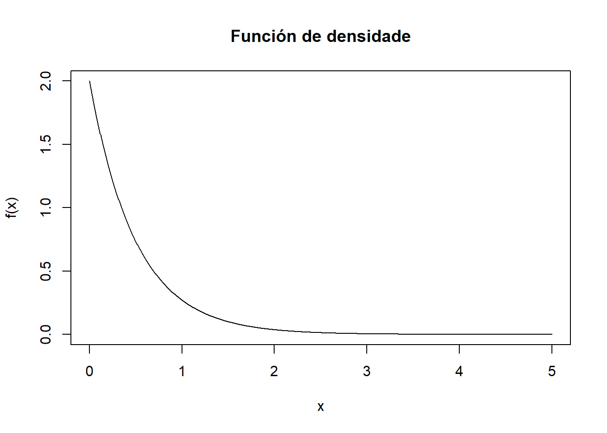
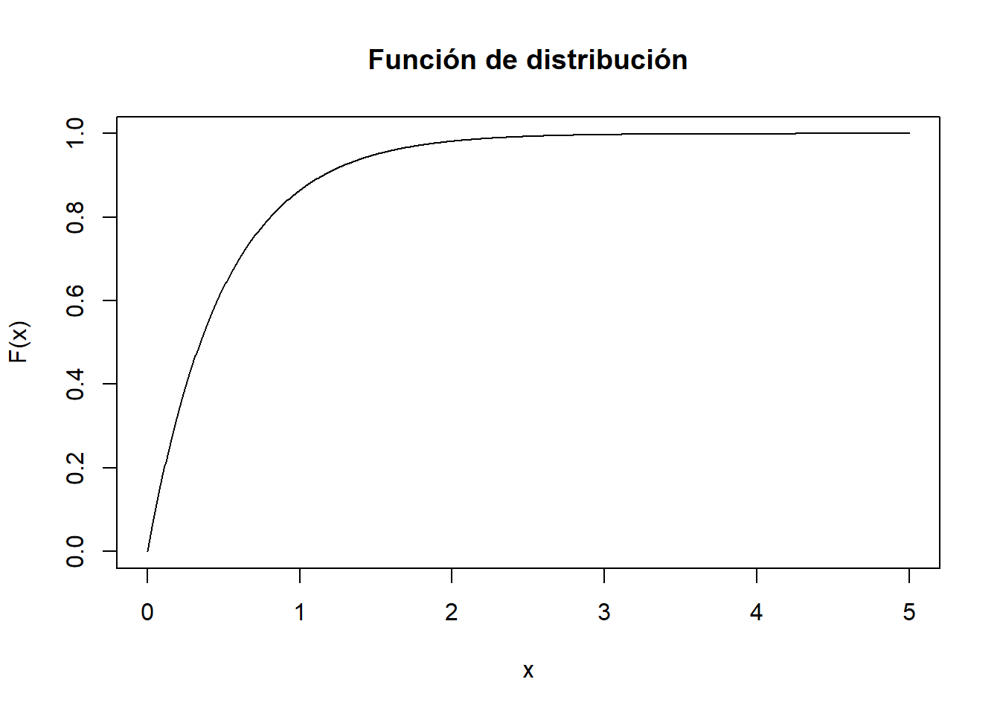
3.3.4 Distribución gamma
Unha variable aleatoria \(X\) que mide o tempo de espera ata o suceso número \(k\) nun proceso de Poisson segue unha distribución gamma de parámetros \(\lambda\) e \(k\). Denótase por \(X\sim\text{Gamma}(\lambda, k)\), onde o primeiro parámetro representa o número medio de sucesos por unidade de tempo e \(k\) é o número de sucesos que queremos que ocorran (é unha xeneralización da distribución exponencial). A función de densidade é
\[ f(x) = \begin{cases} \frac{\lambda^k}{\Gamma(k)} e^{-\lambda x} x^{k-1} & \text{se } x > 0, \\ 0 & \text{noutro caso} \end{cases} \]
onde para valores de \(k\) naturais distintos de cero, \(\Gamma(k) = (k - 1)!=(k-1)(k-2)\cdots 2\cdot 1\).
En R, dgamma() avalía a función de densidade, pgamma() a función de distribución, qgamma() os cuantís, e rgamma() xera valores aleatorios dunha distribución gamma.
Como exemplo, representamos a función de densidade e a función de distribución dunha variable \(X\sim\Gamma(\lambda=2, k=3)\).
k <- 3
lambda <- 2
x <- seq(0, 5, length = 1000) # Valores onde avaliar f
fx <- dgamma(x, shape = k, rate = lambda) # Función de densidade
Fx <- pgamma(x, shape = k, rate = lambda) # Función de densidade
plot(x, fx, xlab = "x", ylab = "f(x)", type = "l", main = "Función de densidade")
plot(x, Fx, xlab = "x", ylab = "F(x)", type = "l", main = "Función de distribución")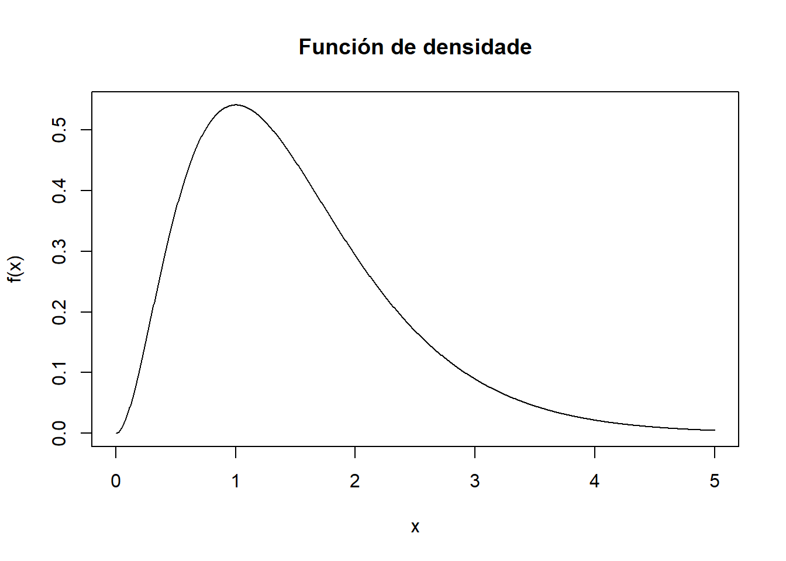
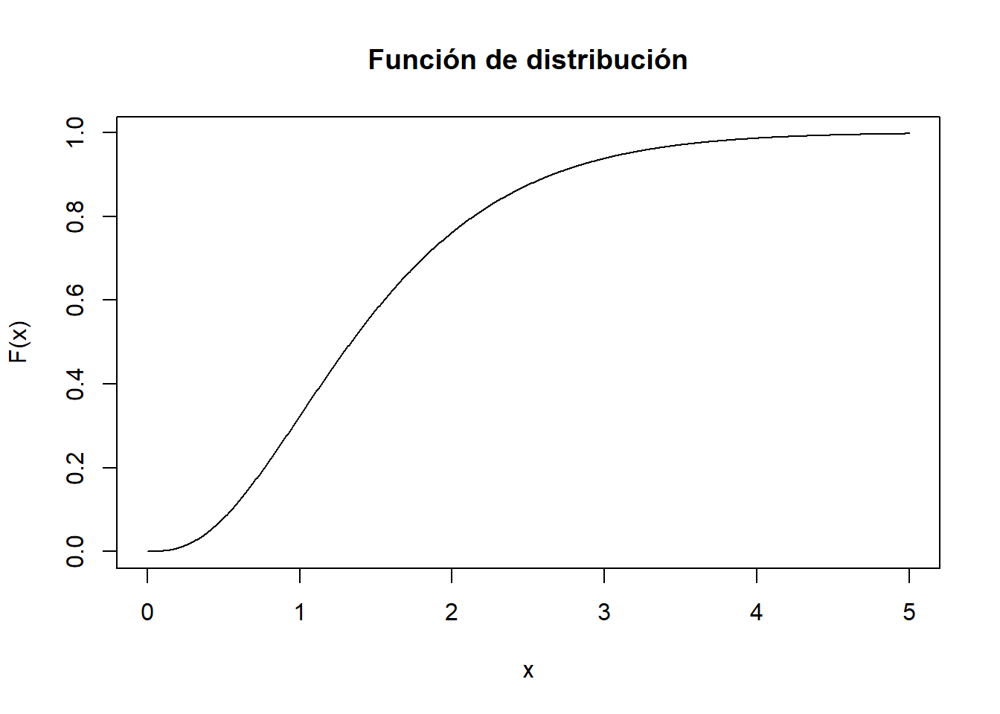
3.3.5 Distribución beta
Diremos que unha variable aleatoria \(X\) segue unha distribución beta de parámetros \(p\) e \(q\), e denotamos \(X\sim\text{Beta}(p,q)\) con \(p\) e \(q\) positivos se a súa función de densidade vén dada como se indica a continuación.
\[ f(x) = \begin{cases} \frac{x^{p-1} (1 - x)^{q-1}}{\beta(p,q)} & \text{se } 0 < x < 1, \\ 0 & \text{noutro caso}. \end{cases} \]
onde \(\beta(p,q) = \frac{\Gamma(p) \cdot \Gamma(q)}{\Gamma(p + q)}.\)
En R, dbeta() avalía a función de densidade, pbeta() a función de distribución, qbeta() os cuantís, e rbeta() xera valores aleatorios dunha distribución beta.
Como exemplo, representamos a función de densidade e a función de distribución dunha variable \(X\sim\text{Beta}(p=2, q=5)\).
p <- 2
q <- 5
x <- seq(0, 1, length = 1000) # Valores onde avaliar f
fx <- dbeta(x, shape1 = p, shape2 = q) # Función de densidade
Fx <- pbeta(x, shape1 = p, shape2 = q) # Función de densidade
plot(x, fx, xlab = "x", ylab = "f(x)", type = "l", main = "Función de densidade")
plot(x, Fx, xlab = "x", ylab = "F(x)", type = "l", main = "Función de distribución")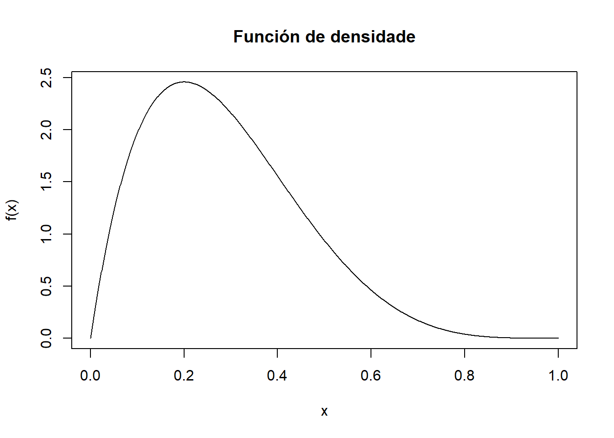
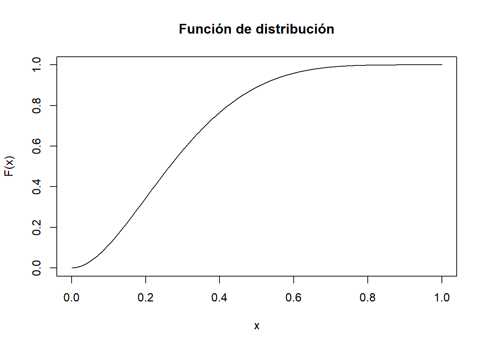
3.4 Teorema Central do Límite
O Teorema Central do Límite (TCL) establece que, se temos unha sucesión de variables aleatorias independentes e idénticamente distribuídas (i.i.d.), cunha media finita \(\mu\) e unha varianza finita \(\sigma^2\), entón a distribución da súa suma (ou, de maneira equivalente, da súa media) tende a unha distribución normal cando o número de variables é suficientemente grande.
Formalmente, se \(X_1, X_2, \ldots, X_n\) son variables aleatorias i.i.d. con \(\mathbb{E}(X_i)=\mu\) e \(\text{Var}(X_i)=\sigma^2\), entón \[\frac{\sum_{i=1}^n X_i-n\mu}{\sigma\sqrt{n}}\underset{n\to\infty}{\longrightarrow }N(0,1).\] De forma equivalente, a media muestral \(\bar{X}_n=\frac{1}{n}\sum_{i=1}^nX_i\) verifica \[\frac{\bar{X}_n-\mu}{\sigma/\sqrt{n}}\underset{n\to\infty}{\longrightarrow } N(0,1).\] Podemos observar e xustificar de maneira intuitiva este resultado mediante simulación. En esencia, o TCL afirma que, se tomamos moitas mostras de tamaño \(n\) dunha variable aleatoria con media \(\mu\) e varianza \(\sigma^2\), entón a distribución das sumas (ou das medias) destas mostras tende a aproximarse a unha distribución normal cando \(n\) é suficientemente grande. Na primeira formulación, isto significa que, se para cada mostra calculamos a suma dos seus valores e representamos un histograma con todas esas sumas, a forma do histograma debería ser aproximadamente normal. De maneira equivalente, na segunda formulación, podemos calcular a media de cada unha das mostras xeradas e representar a distribución desas medias mediante un histograma. De novo, observaremos que esa distribución se asemella cada vez máis a unha normal a medida que aumenta \(n\). Finalmente, se estandarizamos estas sumas ou medias como se indica en cada caso, os histogramas obtidos deberían aproximarse á distribución normal estándar \(\text{N}(0,1)\).
Para ilustrar o TCL, imos partir dunha distribución que non é normal, por exemplo unha distribución exponencial. Recorda que se \(X\sim\text{Exp}(\lambda)\), entón a súa media é \(\mu=1/\lambda\) e a súa varianza é \(\sigma^2=1/\lambda^2\).
set.seed(123)
B <- 1000 # número de mostras
n <- 500 # tamaño de cada mostra
# Distribución orixinal: Exponencial(lambda)
lambda <- 1
mu <- 1 / lambda # media teórica
sigma <- 1 / lambda # desviación típica teórica
# Simulamos B mostras de tamaño n e, para cada mostra, calculamos suma e media
medias <- sumas <- numeric()
for (i in 1:B) {
mostra <- rexp(n)
sumas[i] <- sum(mostra)
medias[i] <- mean(mostra)
}
# Estandarizamos as sumas
Zsuma <- (sumas - n * mu) / (sigma * sqrt(n))
# Estandarizamos as medias
Zmedia <- (medias - mu) / (sigma / sqrt(n))
# Histograma das sumas estandarizadas
hist(Zsuma,
freq = FALSE,
col = "lightblue",
main = "TCL: Aproximación á N(0,1) da suma de exponenciais",
xlab = "Valores de Zsuma"
)
# Engadimos a densidade dunha N(0,1)
curve(dnorm(x), add = TRUE, lwd = 2, col = 2)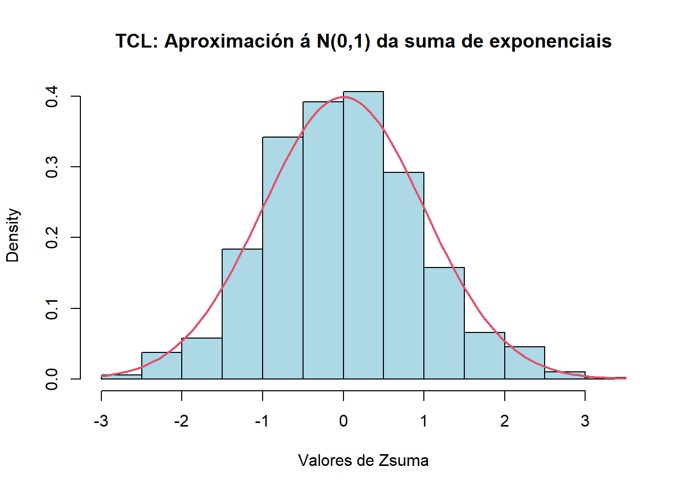
# Histograma das medias estandarizadas
hist(Zmedia,
freq = FALSE,
col = "lightgreen",
main = "TCL: Aproximación á N(0,1) da media de exponenciais",
xlab = "Valores de Zmedia"
)
# Engadimos a densidade dunha N(0,1)
curve(dnorm(x), add = TRUE, lwd = 2, col = 2)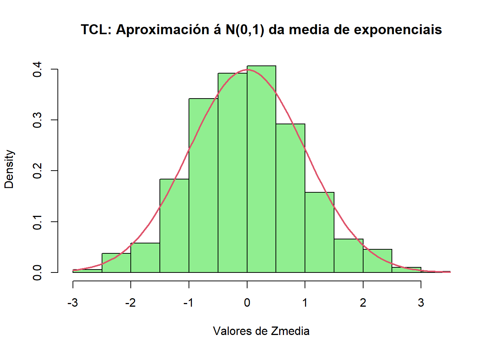
O Teorema TCL xustifica, entre outras cousas, por que unha distribución binomial pode aproximarse por unha distribución normal cando \(n\) é grande. Para entendelo, basta lembrar que unha variable binomial \(X\sim\text{Binom}(n,p)\) conta o número de éxitos en \(n\) repeticións independentes dun experimento con probabilidade de éito en cada intento \(p\). Por exemplo, lanzar unha moeda \(n\) veces e contar cantas caras saen. Agora ben, cada repetición individual pode representarse cunha variable de Bernoulli:
\[ X_i = \begin{cases} 1, & \text{se hai éxito},\\ 0, & \text{se non hai éxito}. \end{cases} \]
A variable binomial non é máis que a suma destes \(n\) resultados:
\[ X = X_1 + X_2 + \cdots + X_n. \]
É dicir, unha binomial é simplemente a suma de variables de Bernoulli independentes \(X_i\) (cada unha delas con \(\mathbb{E}(X_i)=p\) e \(\text{Var}(X_i)=p(1-p)\)). E aquí é onde entra o TCL: este teorema di que a suma dun gran número de variables aleatorias independentes tende a seguir unha distribución normal, independentemente da distribución orixinal. Por iso, cando \(n\) é suficientemente grande, a distribución binomial \(\text{Binom}(n,p)\) pode aproximarse por unha normal de media \(np\) e de desviación típica \(\sqrt{np(1-p)}\).
Na seguinte gráfica amosamos a función de masa dunha variable aleatoria \(X\sim \text{Binom}(n,p)\) para distintos valores de \(n\). En cada caso, superpoñemos tamén a densidade da distribución normal\(\text{N}(\mu=np,\sigma=\sqrt{np(1-p)})\), que proporciona unha aproximación cada vez mellor á binomial a medida que \(n\) aumenta, tal e como xustifica o TCL.
p <- 0.3 # Parámetro p
n_values <- c(5, 10, 50) # Valores de n que imos comparar
par(mfrow = c(1, 3)) # Debuxar 3 gráficos en fila
for (n in n_values) {
x <- 0:n # Valores posibles da binomial
fx <- dbinom(x, size = n, prob = p) # Función de masa binomial
# Parámetros da aproximación normal
mu <- n * p
sigma <- sqrt(n * p * (1 - p))
# Representar función de masa
plot(x, fx,
type = "h",
main = paste("n =", n),
xlab = "x", ylab = "P(X = x)"
)
# Engadir densidade normal aproximada
curve(dnorm(x, mean = mu, sd = sigma),
add = TRUE, lwd = 2, col = 2
)
}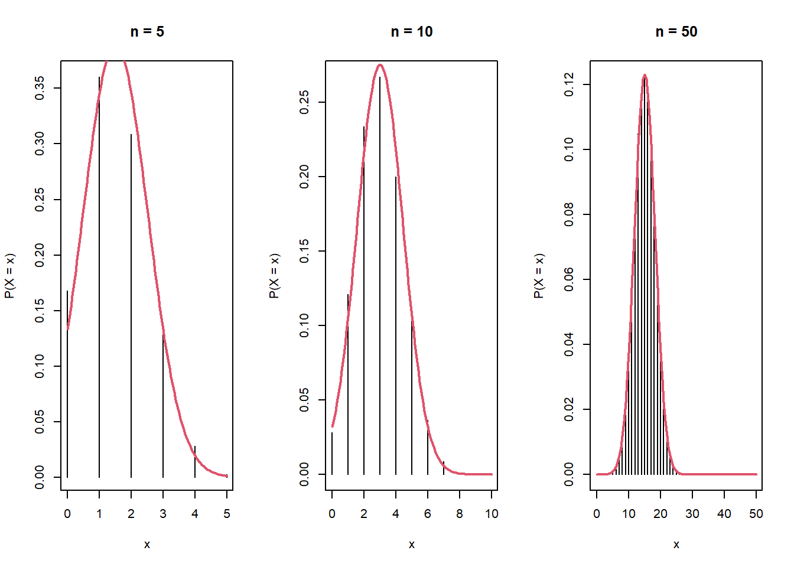
Cómpre lembrar que a distribución binomial é discreta e só pode tomar valores enteiros (\(0,1,2,\dots,n\)), mentres que a distribución normal é continua. Por iso, cando aproximamos unha binomial \(X\sim \text{Binom}(n,p)\) mediante unha normal \(Y\sim \text{N}(np,\sqrt{np(1-p)})\), adoita empregarse a chamada corrección por continuidade:
\[ P(X = k)\approx P(k-0.5\leq Y \le k+0.5), \] Por exemplo:
n <- 50
p <- 0.2
k <- 5
mu <- n * p
sigma <- sqrt(n * p * (1 - p))
dbinom(5, n, p) # P(X=k)
pnorm(5.5, mu, sigma) - pnorm(4.5, mu, sigma) # P(k-0.5<Y<k+0.5)=F(5.5)-F(4.5)